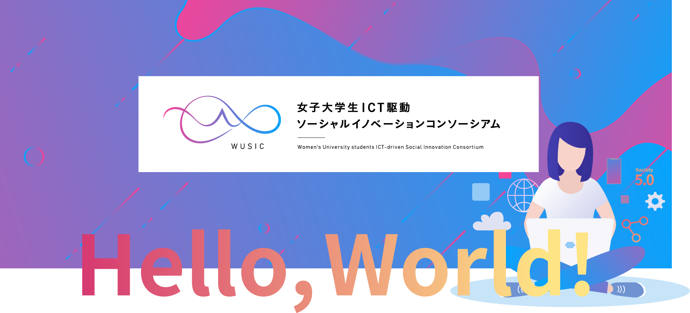
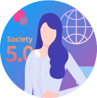
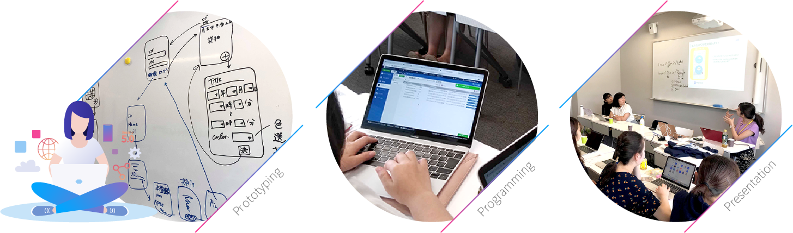

連絡先| wusic@googlegroups.com
問い合わせ窓口|WUSIC運営事務局

01
広い分野の学生が、社会に求められるイノベーションを考え、ICTを通じて実現することを実践的に学ぶ機会を提供します。
02
産業界との連携を推進し、あらゆる分野の学生がICTを活用する知識やサービス産業に関する理解を深める機会を提供します。
03
産業界には現代の学生について理解を深め、学生にどのように社会に貢献できるかを誘発する機会を提供します。
産業界と連携しながら、Society 5.0を支える女性人材を育成していくことは、
今後のわが国の将来の知識サービス産業の発展に向けて大いに寄与するものと考えます。
コンソーシアムについて
Our Consortium
コンソーシアム設立の目的
高度情報化した
Society 5.0時代を牽引する女性リーダーの育成
女性活躍
社会で活躍できる女性を育成
「働く女性が希望に応じて能力を十分に発揮できるダイバーシティ社会
を実現すべく、政府が目指す未来社会である「Society 5.0」の社会を
牽引する女性リーダーを育成
ICTリテラシーの向上
文系と理系の専門分野を問わず
女子大学生のICTプログラミングリテラシーの向上
様々なICT技術を体験することで、プログラムやクラウド、
AIの仕組みを理解し、ICTリテラシーを向上
